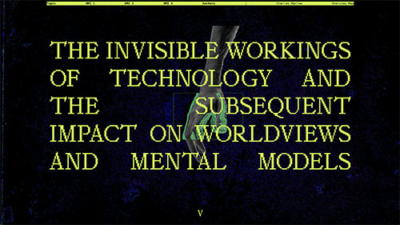
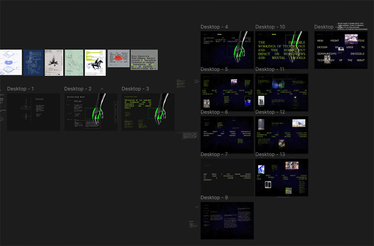

I honestly don't remember if there was anything in particular. I guess my earlier experiments with web, journalling and making little interactive bits and pieces.
Firstly I gathered my writing and precedents, and wrote out an overview map using Zoe's guide from miro. I went kind of wide with the questions, methods, frameworks, etc, as I wasn't really sure of the specifics. I had found lots of writing I was interested in, so that part was easy, and I even had far off ideas of what the final project might look like, but putting what I've been thinking about into a topic sentence was surprisingly difficult.
The next step was taking the information I had written out and throwing it into a figma file to design a web experiment. At this point I thought maybe I would focus on the design and using figma, and not try and build the actual functioning site.

I wanted to develop this more but kind of hit a wall. I had to travel to Melbourne, and a mix of being busy and not knowing what to do meant a bit of wasted time. In the end I made a workable design in figma and decided to make the functioning website, and play with some of the tools of the web, css, html etc.
Making the site was pretty smooth, I kept everything pretty simple and within the realms of my knowledge. Some time has passed since I did it and am now writing this, but I think I did ask some questions of AI and also used the MDN website for help. Adding little elements of animation was something that I found really helped make it feel like a digital product, rather than a flat layout that could have just as easily been printed out.